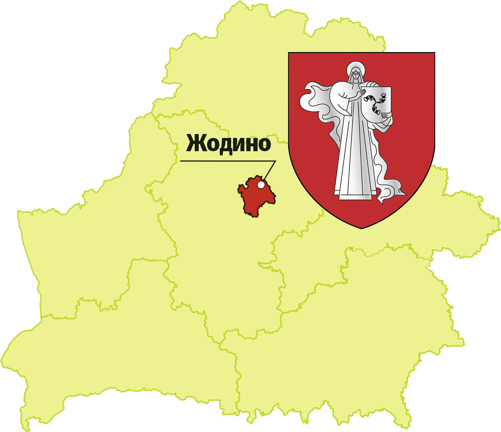

На этой странице вы откроете для себя удивительный белорусский город — Жодино, где история переплетается с современностью, а душа народа живёт в каждом памятнике, парке и улице.
Здесь родился легендарный БЕЛАЗ, здесь чтят память героев, создают уютные пространства для жизни и отдыха, и с любовью сохраняют культурное наследие.
Погрузитесь в атмосферу города, где каждый уголок рассказывает свою историю, а каждый житель — часть большого и доброго сердца Жодино.
История города Жодино начинается в 1643 году как местечко Богуслав Поле, основанное Богуславом Радзивиллом. В 1958 году поселок получил развитие с созданием БЕЛАЗ. Второй «день рождения» — 7 марта 1963 года.
Основные этапы:В Жодино стоит посетить музеи, парки, памятники и храмы. Вот самые интересные места:
Музеи:


Герб и флаг Жодино изображают женскую фигуру с родовым гербом Радзивиллов «Трубы».

Жодино находится в Минской области, в 40 км от Минска. Через город проходят важные транспортные артерии.

Актуальные новости публикуются на сайте:
Жодинский городской исполнительный комитет
Жодино — город с крупнейшим производством самосвалов БЕЛАЗ. Население на 30 января 2025 года — 64 931 человек.
Спасибо, что заглянули на мою страницу! Надеюсь, вы почувствовали тепло и красоту